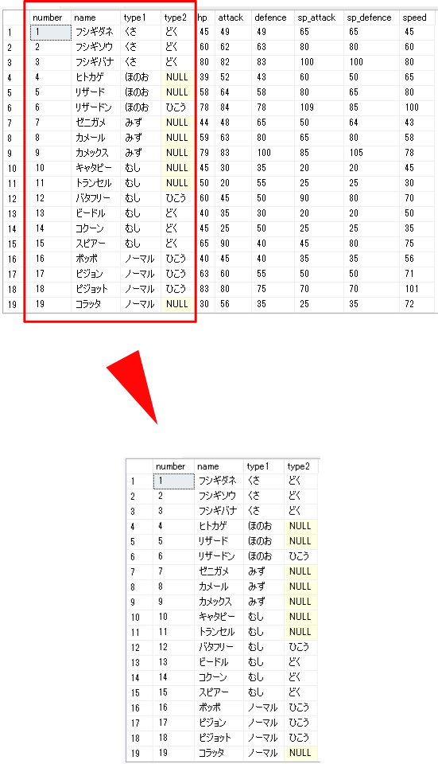
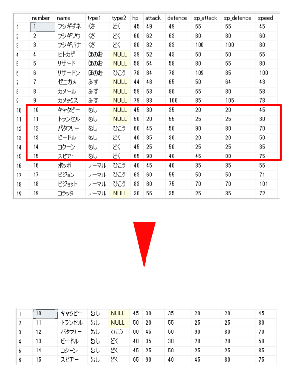
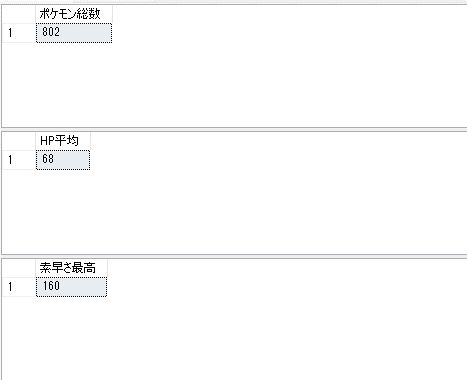
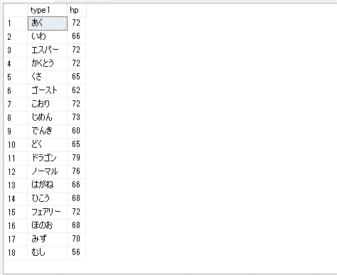
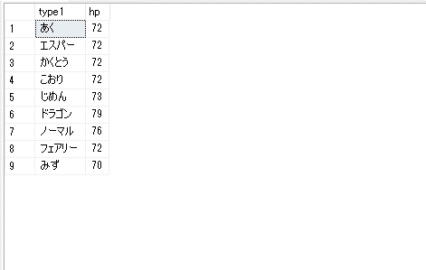
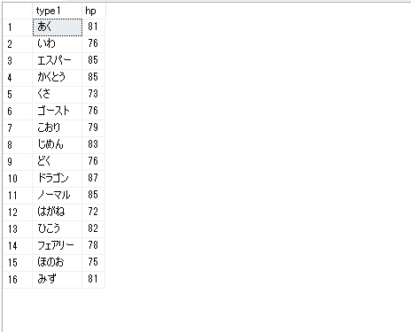
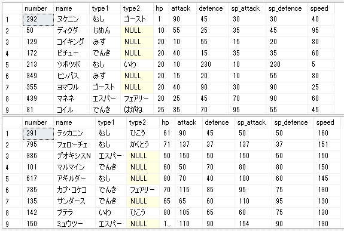

CRUD
CRUDとは、以下の単語の頭文字を合わせてもので、「データに対する一般的な処理4つ」のことです。
| 名称 | 説明 |
|---|---|
| CREATE | データの作成 |
| READ | データの読み取り |
| UPDATE | データの更新 |
| DELETE | データの削除 |
SQLではそれぞれ、以下のクエリ文が該当します。
| メソッド | CRUD |
|---|---|
| INSERT文 | CREATE |
| SELECT文 | READ |
| UPDATE文 | UPDATE |
| DELETE文 | DELETE |
データベーススペシャリスト試験を受ける人の大半は業務でSQLを使用する方だと思いますが、使用する頻度が低い人のために入門レベルから説明します。
以下で使用するデータベース・テーブルを作成しましょう♪
-- データベースの作成
CREATE DATABASE poke;
-- データベースの選択
USE poke;
-- テーブルの作成
CREATE TABLE pokemon(
number INT PRIMARY KEY,
name NVARCHAR(5) NOT NULL,
type1 NVARCHAR(5) NOT NULL,
type2 NVARCHAR(5) NULL,
hp INT NULL,
attack INT NULL,
defence INT NULL,
sp_attack INT NULL,
sp_defence INT NULL,
speed INT NULL
);
※ クエリは逐次実行してください。
「poke」データベースを作成し、その中に「pokemon」テーブルを作成しました。
「pokemon」テーブルでは、以下の内容を管理します。
| カラム名 | 説明 |
|---|---|
| number | 図鑑番号 |
| name | 名前 |
| type1 | タイプ1 |
| type2 | タイプ2 |
| hp | HP |
| attack | 攻撃 |
| defence | 防御 |
| sp_attack | 特攻 |
| sp_defence | 特防 |
| speed | スピード |
INSERT文
行を追加するためのSQL文です。
INSERT INTO テーブル名(列1, 列2, 列3)
VALUES(値1, 値2, 値3);
では、「pokemon」テーブルにピカチュウを登録してみましょう♪
INSERT INTO pokemon(number, name, type1)
VALUES('25', 'ピカチュウ', 'でんき')
指定していない列は「NULL」となります。
指定した列が「NOT NULL」制約を課している場合にはエラーとなります。
SELECT文
テーブルから指定した列を指定した条件から取得します。
SELECT 列1, 列2, 列3
FROM テーブル名
WHERE 条件;
では、でんきタイプのポケモン一覧を取得してみましょう♪
SELECT *
FROM pokemon
WHERE type1 = 'でんき' OR type2 = 'でんき';
全ての列を取得する際には「*」を指定し、条件に対しては「AND」「OR」で論理和・論理積を使用可能です。
また、「AS 名前」とすることで取得結果の列に任意の名前を設定可能です。
射影と選択
| 射影 | 選択 |
|---|---|
| 指定したテーブルから特定の列を取得する作業を指します。 データベース理論の観点からは、ある関係のうち、指定した属性のみを抽出する演算と説明されます。 | 指定したテーブルから特定の条件を満たす行を取得する作業を指します。 データベース理論の観点からは、ある関係のうち、指定した特定の集合だけを抽出する演算と説明されます。 |
射影
「SELECT 列1, 列2, …」と取得する列を指定する作業を言います。
一般的には取得された行のうち、重複するものは排除することが多いため、「SELECT DISTINCT 列1, 列2, …」というSQLが射影に該当します。

選択
「WHERE」句によって取得する行に対して条件を課すことを言います。

条件として以下の設定が可能です。
| 条件句 | 説明 |
|---|---|
| 関係演算子 | 「<」「<=」「>」「>=」「=」「<>」 |
| BETWEEN | 「BETWEEN A AND B」で「A ～ B」間に属するという条件を課すことができます。 「A」「B」の大小関係は気にせず、「A」「B」と等価のものも含みます。 |
| IN | 「IN (A, B, C, …)」と記述し、続くカッコ内の値に含まれるかを条件として課します。 |
| LIKE | 文字列の部分一致を指定します。 「%」は任意の0文字以上を表し、「_」は任意の1文字を表します。 |
| IS (NOT) NULL | NULLかどうかを判定します。 「= NULL」では判定できないことに注意して下さい。 |
集約関数
SELECT文でグループを作成して、そのグループ間での合計や件数や平均を求めるために使用します。
集約関数には以下のものがあります。
| 集約関数 | 意味 |
|---|---|
| AVG | 平均 |
| MIN | 最小 |
| MAX | 最大 |
| SUM | 合計 |
| COUNT | 件数 |
では、単一タイプのポケモンの総数、全ポケモンのHPの平均、素早さの最高値を求めましょう♪
第六世代までを対象としています。
SELECT COUNT(*) AS 'ポケモン総数'
FROM pokemon;
SELECT AVG(hp) AS 'HP平均'
FROM pokemon;
SELECT MAX(speed) As '素早さ最高'
FROM pokemon;

集約関数と同時に「WHERE」句を使用すると、集約される前のデータを対象に絞り込みが行われることに注意して下さい。
グループ化
「GROUP BY」句によってグループ化をすることが可能です。
SELECT *
FROM テーブル名
GROUP BY グループ化する列名
HAVING 条件;
また、グループ化後のデータに対して絞り込み条件を課す場合には「HAVING」を使用します。
「WHERE」句はグループ化前の絞り込みに使用されます。
では、メインタイプでグループ化してみましょう♪
GROUP BY句を指定した場合には、取得対象の列には以下の2つを指定可能です。
- GROUP BYで指定したグループ化対象列
- 集約関数
SELECT type1, AVG(hp) AS hp
FROM pokemon
GROUP BY type1;

次にメインタイプでグループ化した後に、hpの平均が「70」以上のタイプを取得しましょう♪
SELECT type1, AVG(hp) AS hp
FROM pokemon
GROUP BY type1
HAVING 70 <= AVG(hp);

「WHERE」句はグループ化前の絞り込みに使用されると説明しましたね♪
では、hpが「50」以上のポケモンを対象にメインタイプによる絞り込みを行った結果、平均が「70」以上のタイプとその平均値を表示しましょう♪
SELECT type1, AVG(hp) AS hp
FROM pokemon
WHERE 50 < hp
GROUP BY type1
HAVING 70 <= AVG(hp);

並び替え
「ORDER BY」句を使用して指定した列を対象に行の並び替えを行います。
並び順には以下の2通りの指定が可能です。
- ASC: 昇順
- DESC: 降順
SELECT *
FROM テーブル名
ORDER BY 対象の列 並び順;
並び順を省略すると、「昇順」が採用されます。
SELECT *
FROM pokemon
ORDER BY hp ASC;
SELECT *
FROM pokemon
ORDER BY speed DESC;

UPDATE文
指定した行の対象の列の値を更新します。
以下のように書きます。
UPDATE テーブル名
SET 列名 = 値
WHERE 条件;
「WHERE」句で条件を設定しないと、全ての行の値が更新されてしなう点に注意して下さい。
DELETE文
指定した行を削除します。
DELETE
FROM テーブル名
WHERE 条件;
「WHERE」句で条件を設定しないとテーブルに格納されている全てのデータが削除されてしまう点に注意して下さい。
「WHERE」句を設定しないと、指定したテーブルを初期化することが可能ですが、一般的にはTRUNCATE句を使用することでテーブルの初期化を行います。
TRUNCATE TABLE テーブル名;